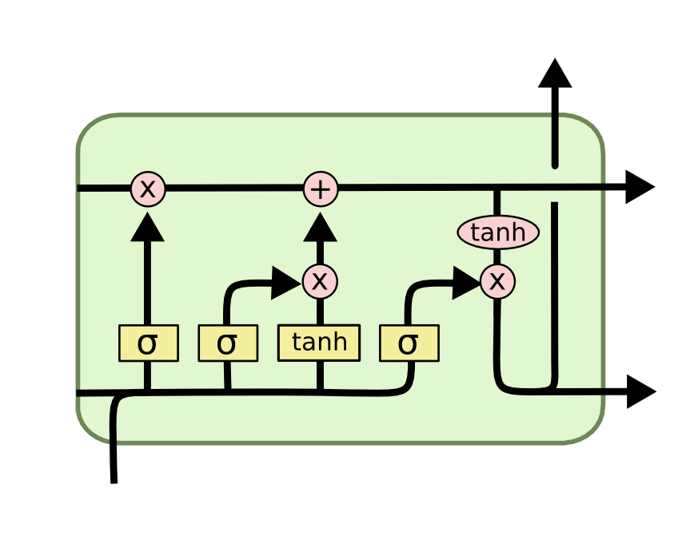
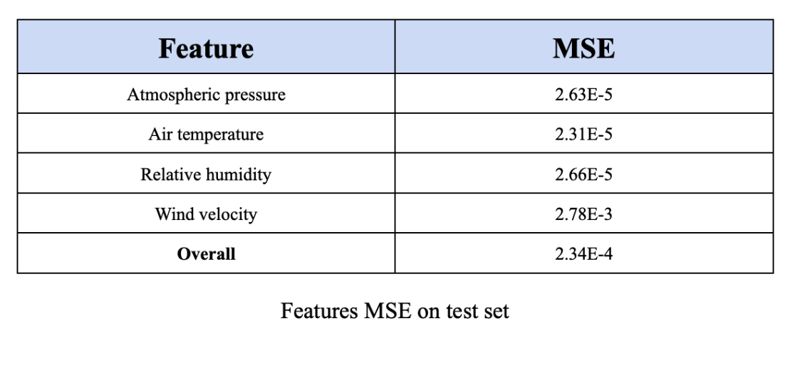
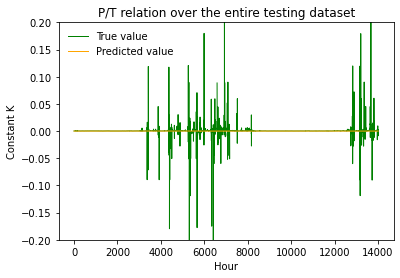

Academic Project
Introduction:
As part of the deep learning course deliverables we were tasked with creating weather forecasting deep models applied to the weather time series dataset. Given that, I worked on creating a model involving LSTM layers. The Long short-term memory (LSTM) model received inputs in the form a history of weather attributes from time t − k to t − 1 and output the following values for a time t:
p (mbar) Atmospheric pressure
T (degC) Air temperature
rh (%) Relative humidity
wv (m/s) Wind velocity
For the purposes of the experiment, k is 7 aiming to provide the model with a longer time series and get better inference.
Methodology
The provided dataset contained not only the required output features (atmospheric pressure, air temperature, relative humidity, wind velocity) but also numerous others including date, time, and H2O content. For the purpose of this experiment, I include only the four similar features as output and assess model performance accordingly.
After loading the training and test datasets, they were normalized both column-wise so each feature was between 0 and 1. This transformation was also applied to the output features so that when it came time to calculate the model’s loss, each feature output was normalized in [0, 1] resulting in equally weighted loss across output values.
Next, I performed median and gaussian filters on both training and testing datasets. Selected inputs are fed into the model, one by one, for each round of training, therefore, at this step I drop all feature columns that are not desired. Data is normalized from 0 to 1 using MinMaxScaler function.
Model Architecture
Using Keras I construct the model with 3 layers of which two of them are long short-term memory (LSTM) and one Dense layer. Both of the LSTM layers consist of a ’relu’ activation function to overcome the vanishing gradient. In addition to this settings, the first LSTM layer returns the hidden state output for each input time step using return sequences. Therefore, the second LSTM layer returns a 3-D sized Tensor with 50 memory units (smart neurons). I used a Dense output layer with a single neuron, as the final step, to return a 3-D prediction.
I elected to use mean squared error (MSE) as the loss function. Additionally, since the model outputs were normalized on [0, 1], the mean squared error was calculated as an unbiased mean across all output features and no loss customization was required to ensure that the importance of each output was weighted evenly.
The LSTM model was trained under the following conditions:
To make sure that the model learns several patterns based on the historical data provided, I use all the training samples with batches of 32 and 30 numbers of epochs. The numbers chosen are enough to train the model without overfitting.
Results
To observe model performance, I chose to use the mean squared error across the entire test set, both peroutput and overall. This to be a robust measure of performance as it allows for an understanding of the degree of prediction inaccuracy for the model as well as the distribution of these inaccuracies across outputs.

Further Analysis
The pressure and temperature of any gas, including air, are directly proportional according to Frenchman Joseph Gay-Lussac law (1778 to 1850). This gas law shows that, if the mass and volume of any given sample of gas are held constant, as the sample’s temperature increases, so will its pressure, and vice versa. Mathematically:
T/P = KG
where kG is the appropriate proportionality constant. The main purpose of this experiment is to verify whether this equality can be satisfied by my extracted results. The assumption is to have a fixed amount of air in a large area outdoors, e.g. a national park, where we can safely keep mass and volume constant.
To start, I converted the pressure and temperature units of both testing and predicted sets to atm and Kelvin, respectively. Next, calculated the kG constant, P/T ratio, for each dataset, separately. finally, visualized the outcomes to easily compare our finding with ground truth.
As you can notice in the figure below, there are some spikes in true value graph that have been mostly eliminated during prediction. This is believed to have been caused by the change in atmospheric dynamic (wind blow for example) where the air mass within a certain volume is no longer fixed. However, in general, the result is perfectly synchronized with the real data. The P/T ratio follows a constant value close to zero. These findings show that my custom-made LSTM model not only achieved a constant kG throughout the entire dataset but also its magnitude is very close to the kG of the real data with a minimal MSE of 1.08444e-05. This indicates this LSTM model is able to memorize long patterns and predict atmospheric features as close to actual data as possible.

Link to the project repo: GitHub